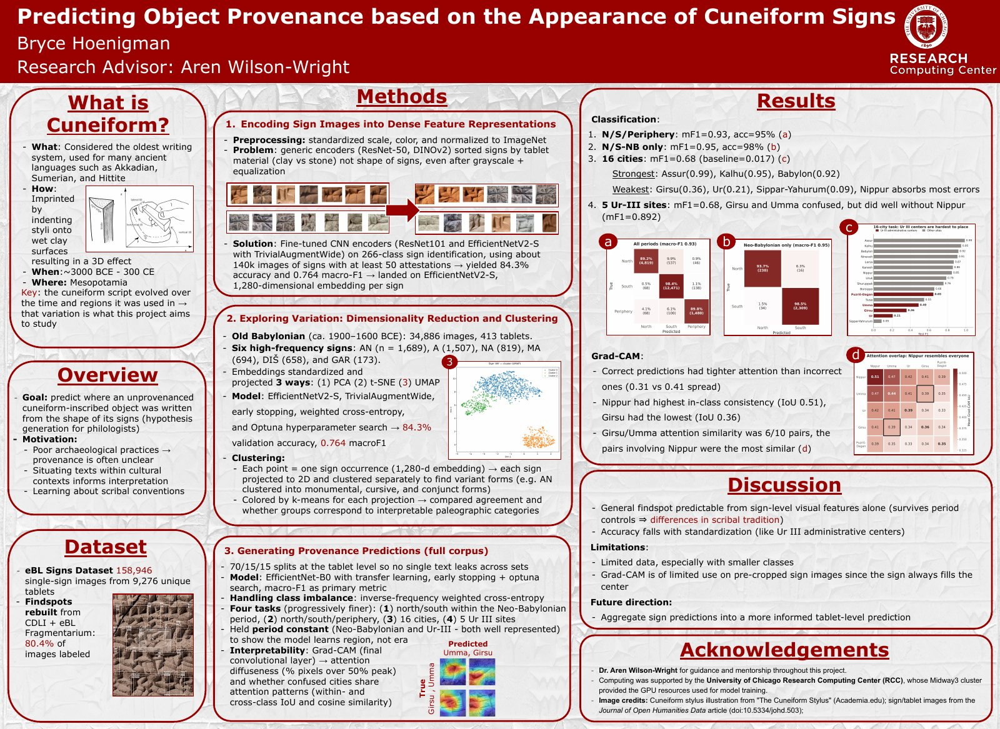

Mind Bytes, Research Computing Center · 2026 · Computing award
Predicting Object Provenance based on the Appearance of Cuneiform Signs
Fine-tuned CNNs to place tablets by region all from individually cropped sign images.
Open the full poster (PDF)